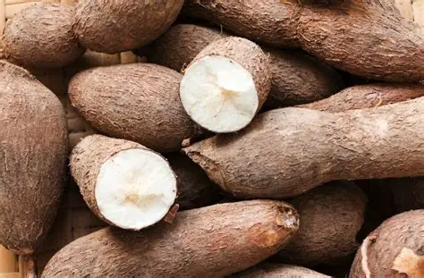
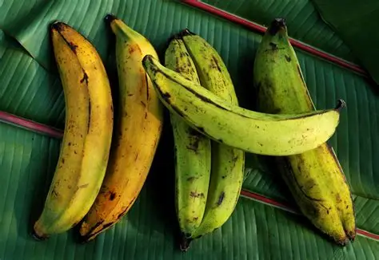
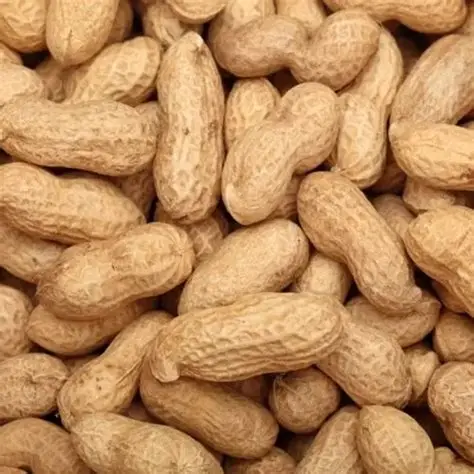
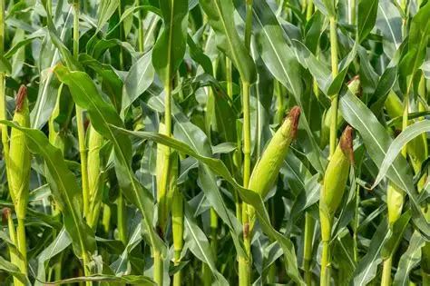
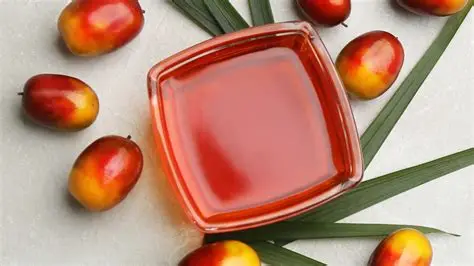
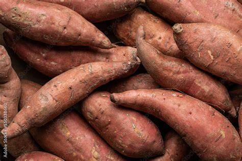

Cassava
Cassava is one of the most important food crops in the Republic of the Congo. It is used to make chikwangue, fufu, and many other traditional foods.

Cassava is one of the most important food crops in the Republic of the Congo. It is used to make chikwangue, fufu, and many other traditional foods.

Plantains are a staple ingredient often boiled, fried, or roasted. They are commonly served alongside fish, meat, and vegetable dishes.

Peanuts provide flavor and nutrition in many Congolese recipes. Ground peanuts are often used in sauces and stews.

Maize is grown in many regions of the country and is used in porridges, flour preparations, and everyday meals.

Palm oil is widely used in traditional Congolese cooking. It adds color, flavor, and richness to dishes such as Saka-Saka and Poulet à la Moambe.

Sweet potatoes are a nutritious crop enjoyed as a side dish or snack and contribute to food security across the country.
Agriculture is central to everyday life in the Republic of the Congo. Crops such as cassava, plantains, maize, peanuts, and oil palm support local communities and provide ingredients for traditional meals. These products connect food, culture, and economic activity throughout the country.